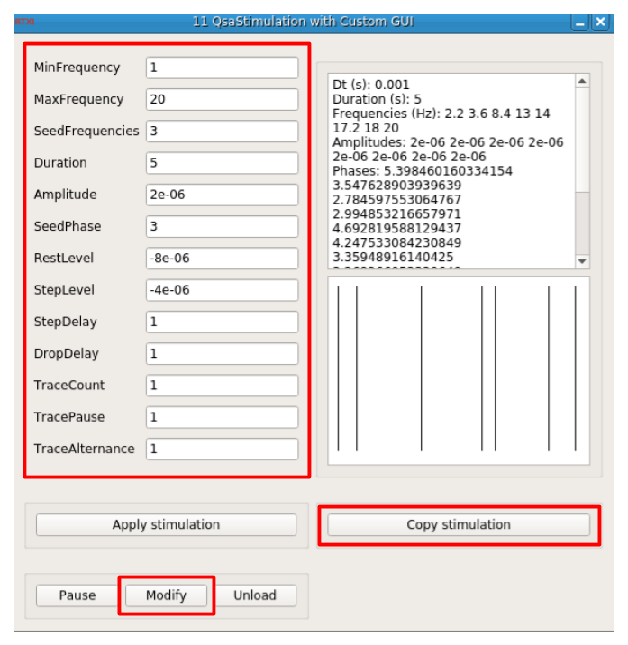
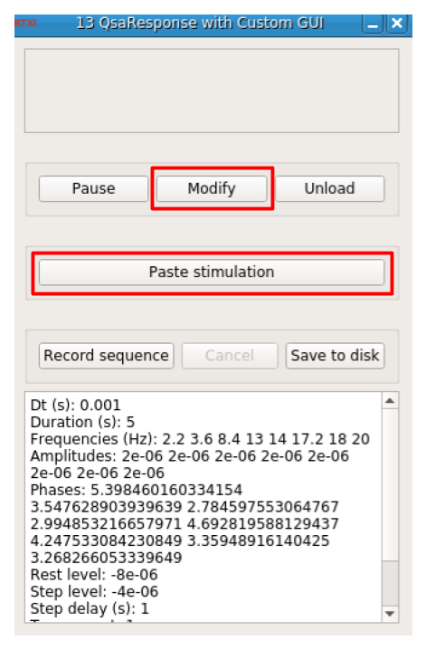

It is recommended to install RTXI 2.2 and follow instructions from the official web site.
In case of software updates, it is important to keep the Xenomai-patched kernel because
it
provides the real
time support for data acquisition. If the default kernel has been changed after an update, it
is still
possible to press
SHIFT at boot to display the GRUB menu, then select "Advanced Options for Ubuntu" and choose
the
Xenomai-patched
kernel.
It is necessary to use the point instead of the comma as the decimal separator. This can be adjusted in Ubuntu (if needed) as follows
The RTXI operating system can also be installed as a virtual machine in VirtualBox. The package
RTXI 2.2 amd64-generic
was tested successfully with OpenQSA. However, the recent VirtualBox Guest Additions sometimes
do not
work, the following procedure can be used to install an older version:
Download VirtualBox Guest Additions 5.1.30 with command:
wget https://download.virtualbox.org/virtualbox/5.1.30/VBoxGuestAdditions_5.1.30.isoMount the ISO:
sudo mkdir /media/iso
sudo mount -o loop VBoxGuestAdditions_5.1.30.iso /media/isoInstall additions:
sudo apt-get install build-essential
sudo apt-get install module-assistant
sudo m-a prepare
cd /media/iso
sudo ./VBoxLinuxAdditions.runFinally, unmount the ISO:
sudo umount /media/isoOpenQSA provides three C++ packages to set up an RTXI experiment:
The three packages are regrouped in a single git repository that can be cloned in command line:
mkdir openqsa ; cd openqsa
git clone https://github.com/openqsa/rtxiThe package qsa must be compiled before the two other qsa_stimulation and qsa_response
because it generates a library file qsa.a
cd rtxi/qsa
make clean ; makeThe library file qsa.a should have been generated. It will be used by the two other
packages.
cd rtxi/qsa_stimulation
make clean ; make
sudo make installcd rtxi/qsa_response
make clean ; make
sudo make installIn order to illustrate the procedure, we also install the RTXI module neuron:
git clone https://github.com/rtxi/neuron
cd neuron ; make clean ; make ; sudo make installThe RTXI system can be launched from the general Ubuntu menu.
The RTXI module qsa_stimulation is a multisinusoidal stimulation generator that conforms to the QSA protocol. It is designed to be synchronized in real time with the RTXI module qsa_response that records the responses and exports them to a fully exploitable JSON file format.
Select menu "Modules" / "Load Plugins", then choose qsa_stimulation.o ; a panel like
this
should appear:
It is composed of five important elements:
A new random stimulation is generated each time the button "Modify" is pressed.
The generated stimulation has the following schema for a single trace:
The full stimulation concatenates any number of traces sequentially. Multiple traces are useful to make averaging and reduce the experimental noise.
The red areas indicate parts of the signal that can be recorded (including the responses) to a JSON file for further mathematical analyses. The gray areas are applied but not recorded.
The step is applied before the two multisines to record transients until the steady state, then it is applied again after the multisines for stabilization.
The multisinusoidal waveform is applied twice as a sum of \(N\) sinusoids:
\[s(t) = \frac{1}{N} \sum_{i=1}^{N} A \sin(2 \pi f_k t + \phi_k)\]where \(t \in [0,\textrm{duration}]\), \(A\) is the amplitude, \(f_k\) are random frequencies and \(\phi_k\) are random phases. The \(f_k\) must be integer multiples of the inverse of duration, which is the lowest possible frequency.
The multisinusoidal waveform is applied first (gray part) to stabilize the response, then it is applied again to record the stable response. Each \(f_k\) must be an integer multiple of \(1 / \textrm{duration}\). Thus, \(2 \pi f_k \textrm{duration}\) is an integer multiple of \(2 \pi\), which implies that the junction between the two multisines is continuous at \(t = \textrm{duration}\).
| Field | Description |
|---|---|
MinFrequency |
Minimal frequency that can be generated (hertz). Must be an
integer
multiple
of 1 / duration. |
MaxFrequency |
Maximum frequency that can be generated (hertz). Must be
integer
multiple of
1 / duration. |
SeedFrequencies |
Positive integer to seed the random frequency generator, or zero to be always random. |
Duration |
The multisine duration (seconds), applied twice. The inverse
1 / duration
must have finite number of digits after the decimal point. |
Amplitude |
Constant amplitude of each individual sinusoid. Note that the multisine superposition is divided by the number of sinusoids. |
SeedPhase |
Positive integer to seed the random phase generator, or zero to be always random. |
RestLevel |
Offset of the signal at rest, which is applied as soon as the "Modify" button is pressed. |
StepLevel |
Offset of the signal determining the steady state. |
StepDelay |
Step delay (seconds) to reach the steady state before and after the multisine. |
DropDelay |
Delay (seconds) at rest level just after the drop of the step level. |
TraceCount |
Number of traces to be recorded. |
TracePause |
Pause (seconds) at rest level between each trace. This pause is applied just after the drop delay. |
TraceAlternance |
Set to +1 to ignore. Otherwise set to -1 to alternate the sign of the multisine at each trace. |
The RTXI module qsa_response records both a stimulation and its synchronized response.
Select menu "Modules" / "Load Plugins", then choose qsa_response.o ; a panel like this
should
appear:

It is composed of five important elements:
The button "Modify" must be pressed after "Paste stimulation" and before "Record sequence".
The different parts of the signal are recognized and can be exported to a JSON file with the following structure:
{
dt: float,
duration: float,
frequencies: array[float],
amplitudes: array[float],
phases: array[float],
rest_level: float,
step_level: float,
step_delay: float,
drop_delay: float,
trace_count: int,
trace_pause: float,
trace_alternance: int,
traces:
[
{
step:
{
time: array[float],
stimulation: array[float],
response: array[float]
},
multisine:
{
time: array[float],
stimulation: array[float],
response: array[float]
},
drop:
{
time: array[float],
stimulation: array[float],
response: array[float]
}
},
... // idem for other traces
]
}Note that in the JSON file, the field "amplitudes" is an array in which all values are equal to the global amplitude \(A\). Indeed, non-flat amplitudes are supported by QSA analysis but not by the RTXI module qsa_stimulation. The JSON file can be directly used with Python:
import json
file = open(filename, 'r')
text = file.read()
data = json.loads(text)
print(data['duration'])as well as with Matlab:
text = fileread(filename);
data = jsondecode(text);
data.durationThe response must be generated by a specific RTXI module implementing a model or a biological experiment. Here, we illustrate with the RTXI module neuron, which implements a classic Hodgkin-Huxley model neuron.
Select menu "Modules" / "Load Plugins", then choose neuron.o ; a panel like this should
appear:
A description of parameters can be found on the web site RTXI/neuron
The three RTXI modules qsa_stimulation, qsa_response and neuron must be connected to cooperate.
Select menu "System" / "Connector" ; a panel like this should appear:
The four connections shown in the text box "Connections" must be defined as follows:
| Name | Description |
|---|---|
Iqsa |
Current generated by qsa_stimulation |
Iapp |
Current applied to neuron |
Iqsa |
Current recorded by qsa_response |
Vm |
Membrane voltage measured from neuron |
Vm |
Membrane voltage recorded by qsa_response |
Sync |
Synchronization signal generated by qsa_stimulation |
Sync |
Synchronization signal recorded by qsa_response |
Open the four panels:
Make the four connections with the connector.
In qsa_stimulation, set parameters then click button "Modify" as many times as desired to generate random stimulations. When a good stimulation is chosen, press button "Copy stimulation".
In qsa_response, press button "Paste stimulation" then click button "Modify".
In neuron, adjust parameters then press button "Modify". Or configure an experimental device in case of a real biological experiment.
Release button "Pause" in panels qsa_stimulation, qsa_response and neuron.
In qsa_response, press button "Record sequence". The module will wait for the stimulation before starting the recording.
In qsa_stimlulation, press button "Apply stimulation" to start the stimulation. The qsa_response will start recording as well.
Wait until the whole stimulation has been applied. Then, in qsa_response the button "Save to
disk" will become active. Click it to save the recorded data to a JSON file. It is recommended
to use
the file extension .json